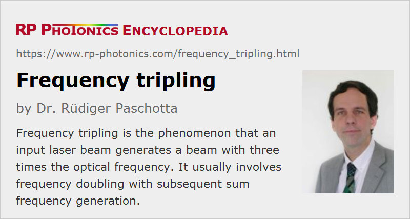

Frequency Tripling
Definition: the phenomenon that an input laser beam generates a beam with three times the optical frequency
Alternative term: third-harmonic generation
More general terms: nonlinear frequency conversion
German: Frequenzverdreifachung
How to cite the article; suggest additional literature
Author: Dr. Rüdiger Paschotta
Frequency tripling is a process of nonlinear frequency conversion where the resulting optical frequency is three times that of the input laser beam. In principle, this can be achieved with a χ(3) nonlinearity for direct third-harmonic generation [12–14], but this is difficult due to the small χ(3) nonlinearity of optical media and phase-matching constraints (except for tripling in gases). Therefore, frequency tripling is usually realized as a cascaded process, beginning with frequency doubling of the input beam and subsequent sum frequency generation of both waves, with both processes being based on nonlinear crystal materials with a χ(2) nonlinearity.

The main application of frequency tripling is the generation of ultraviolet light. Most common is the generation of 355-nm light by frequency tripling of a laser beam with 1064 nm, as obtained from a Nd:YAG or Nd:YVO4 laser. A common approach is to use two LBO (lithium triborate) crystals, or an LBO and an BBO crystal, the first being phase-matched for second-harmonic generation and the second for sum frequency generation. It is easy to make this process efficient when using pulses from a Q-switched or mode-locked laser, but also possible in continuous-wave operation e.g. with intracavity frequency doubling and resonant sum frequency generation.
It is also possible to generate blue light by frequency tripling the output of a 1.3-μm neodymium laser.
Power Conversion Efficiency
Theoretically, the total power conversion efficiency of the frequency tripling process could be close to 100 % in a single pass through the crystals. For that, the frequency doubler should have a conversion efficiency of 2/3, so that the second-harmonic wave has twice the power of the remaining fundamental wave, and both have equal photon numbers. In practice, the efficiency of the frequency doubler is normally somewhat lower (often around 40 to 50 %), and in particular the sum frequency mixer is far from 100 % efficient. The latter problem can result from many effects, such as too low optical intensities, design limitations enforced by optical damage, effects of spatial walk-off, mismatch of pulse duration and/or temporal walk-off, etc. Tentatively, the conversion works best for high peak powers in not too short pulses, and when the beam quality is high and the optical bandwidth not too high. Overall conversion efficiencies from infrared to ultraviolet can then be of the order of 30 to 40%.
With numerical modeling, the whole frequency tripling process can be simulated with fairly high accuracy and reliability of the results.
Degradation of Nonlinear Crystals
For efficient single-pass third-harmonic generation, the nonlinear crystals need to be operated with fairly high optical intensities. For the sum-frequency mixer crystal, this is often a problem: the intense ultraviolet light can lead to gradual degradation of the crystal material and an anti-reflection coating on the exit surface, even for operation well below the threshold for instant laser-induced damage. Under such conditions, nonlinear crystals can become consumables, i.e., system parts with quite limited lifetime, which need to be replaced relatively often. As normally only the volume of the beam is affected, one may often somewhat shift the crystal in order to use another region which has not yet been degraded. Such movements may also be done with some automatic crystal shifter; this method is sometimes called indexing of the crystal. Under good conditions, one may reach several hundred hours of operation on one spot of an LBO crystal and use dozens of spots for obtaining an overall lifetime of many thousand hours with a single crystal.
The achieved crystal lifetime can depend on various factors, including the crystal material type, the material quality, the peak and average intensity levels, details of anti-reflection coatings, other pulse parameters such as the pulse duration, and also contaminants in the ambient air. For example, hydrocarbons from some oils at mechanical parts may be chemically altered by the ultraviolet light and may lead to the deposition of absorbing material on the crystal and on other optics, e.g. a collimation lens.
Note that higher UV output powers do not necessarily decrease the crystal lifetime, if the mode areas in the crystal are increased in proportion to the power level. The operational intensities are then not higher than in lower-power devices. One may be tempted, however, to use higher powers for applying higher intensities with the goal of further increasing the power conversion efficiency. This can then reduce the crystal lifetime.
Substantial improvements in crystal lifetime for a given output power level are possible by using an enhancement cavity around the third-harmonic crystal, i.e., by doing resonant frequency conversion. This is because the single-pass conversion efficiency can then be lower, as the non-converted light is “recycled”. One may then work without an automatic crystal shifter. However, resonant enhancement is not always possible (e.g., for laser sources with insufficient coherence properties) and introduces additional complications.
Suppliers
The RP Photonics Buyer's Guide contains 24 suppliers for frequency tripling devices. Among them:
Questions and Comments from Users
Here you can submit questions and comments. As far as they get accepted by the author, they will appear above this paragraph together with the author’s answer. The author will decide on acceptance based on certain criteria. Essentially, the issue must be of sufficiently broad interest.
Please do not enter personal data here; we would otherwise delete it soon. (See also our privacy declaration.) If you wish to receive personal feedback or consultancy from the author, please contact him e.g. via e-mail.
By submitting the information, you give your consent to the potential publication of your inputs on our website according to our rules. (If you later retract your consent, we will delete those inputs.) As your inputs are first reviewed by the author, they may be published with some delay.
Bibliography
| [1] | G. H. C. New and J. F. Ward, “Optical third-harmonic generation in gases”, Phys. Rev. Lett. 19 (10), 556 (1967), doi:10.1103/PhysRevLett.19.556 |
| [2] | W. Seka et al., “Demonstration of high efficiency third harmonic conversion of high power Nd:glass laser radiation”, Opt. Commun. 34, 469 (1980), doi:10.1016/0030-4018(80)90419-8 |
| [3] | R. Craxton, “High efficiency frequency tripling schemes for high-power Nd: Glass lasers”, IEEE J. Quantum Electron. 17 (9), 1771 (1981), doi:10.1109/JQE.1981.1071318 |
| [4] | G. Manneberg, “Phase-matched frequency tripling and phase conjugation in isotropic materials”, J. Opt. Soc. Am. B 4 (11), 1790 (1987), doi:10.1364/JOSAB.4.001790 |
| [5] | A. Lago et al., “Coherent 70.9-nm radiation generated in neon by frequency tripling the fifth harmonic of a Nd:YAG laser”, Opt. Lett. 13 (3), 221 (1988), doi:10.1364/OL.13.000221 |
| [6] | R. Friedberg et al., “Optimizing third harmonic generation in gases”, J. Phys. B: At. Mol. Opt. Phys. 24, 2883 (1991), doi:10.1088/0953-4075/24/12/011 |
| [7] | R. Wu, “High-efficiency and compact blue source: intracavity frequency tripling by using LBO and BBO without the influence of birefringence”, Appl. Opt. 32 (6), 971 (1993), doi:10.1364/AO.32.000971 |
| [8] | L. Goldberg et al., “Tunable UV generation at 286 nm by frequency tripling of a high-power mode-locked semiconductor laser”, Opt. Lett. 20 (15), 1640 (1995), doi:10.1364/OL.20.001640 |
| [9] | D. Eimerl et al., “Multicrystal designs for efficient third-harmonic generation”, Opt. Lett. 22 (16), 1208 (1997), doi:10.1364/OL.22.001208 |
| [10] | J. Squier et al., “Third harmonic generation microscopy”, Opt. Express 3 (9), 315 (1998), doi:10.1364/OE.3.000315 |
| [11] | Z. Sun et al., “Generation of 4.3-W coherent blue light by frequency-tripling of a side-pumped Nd:YAG laser in LBO crystals”, Opt. Express 12 (26), 6428 (2004), doi:10.1364/OPEX.12.006428 |
| [12] | F. Gravier and B. Boulanger, “Cubic parametric frequency generation in rutile single crystal”, Opt. Express 14 (24), 11715 (2006), doi:10.1364/OE.14.011715 |
| [13] | K. Miyata et al., “Phase-matched pure χ(3) third-harmonic generation in noncentrosymmetric BiB3O6”, Opt. Lett. 34 (4), 500 (2009), doi:10.1364/OL.34.000500 |
| [14] | K. Miyata et al., “High-efficiency single-crystal third-harmonic generation in BiB3O6”, Opt. Lett. 36 (18), 3627 (2011), doi:10.1364/OL.36.003627 |
See also: frequency doubling, frequency quadrupling, nonlinear frequency conversion, nonlinear crystal materials, ultraviolet light, ultraviolet lasers
and other articles in the category nonlinear optics
|  |
If you like this page, please share the link with your friends and colleagues, e.g. via social media:
These sharing buttons are implemented in a privacy-friendly way!